Na Aula 02, a rede aprendeu com o passo mais simples possível. Hoje: descer bem (chegar rápido ao fundo da perda) e descer para o lugar certo (ir bem em dados que a rede nunca viu).
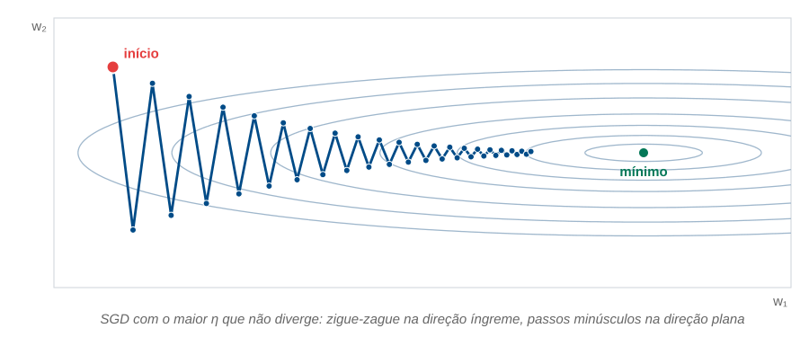
A perda é 50 vezes mais íngreme em $w_2$ do que em $w_1$. Um $\eta$ grande faz $w_2$ explodir; com o maior $\eta$ que não diverge, $w_1$ quase não anda. Depois de 40 passos o SGD ainda está a 1,91 do mínimo.
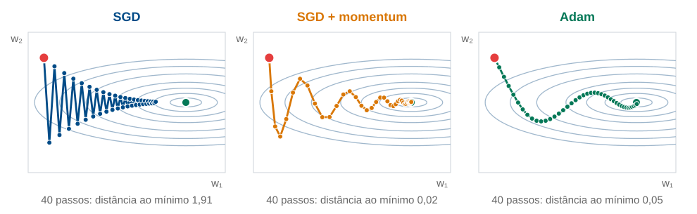
O momentum soma os gradientes anteriores: os zigue-zagues se cancelam e a direção consistente acelera. O Adam também divide cada coordenada pelo tamanho típico do seu gradiente, então as duas direções andam no mesmo ritmo.
SGD com momentum
$v \leftarrow \beta\, v + \nabla\mathcal{L}$ $w \leftarrow w - \eta\, v$
onde:
$v$ é a "velocidade", uma média dos gradientes recentes
$\beta$ diz quanto da velocidade se mantém; com $\beta = 0{,}9$, pesam cerca dos últimos 10 gradientes
$m \leftarrow \beta_1 m + (1-\beta_1)\,\nabla\mathcal{L}$ $s \leftarrow \beta_2 s + (1-\beta_2)\,(\nabla\mathcal{L})^2$ $w \leftarrow w - \eta\, m / (\sqrt{s} + \epsilon)$
$m$ é o momentum; $\sqrt{s}$ é o tamanho típico do gradiente de cada peso
torch.optim.AdamW(model.parameters(), lr=1e-3)
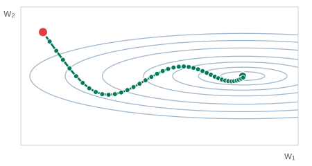
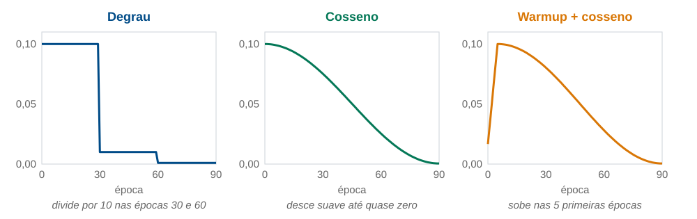
Passos grandes no começo para andar rápido, pequenos no fim para assentar no fundo. O warmup evita passos grandes enquanto os pesos ainda são aleatórios; é padrão em Transformers.
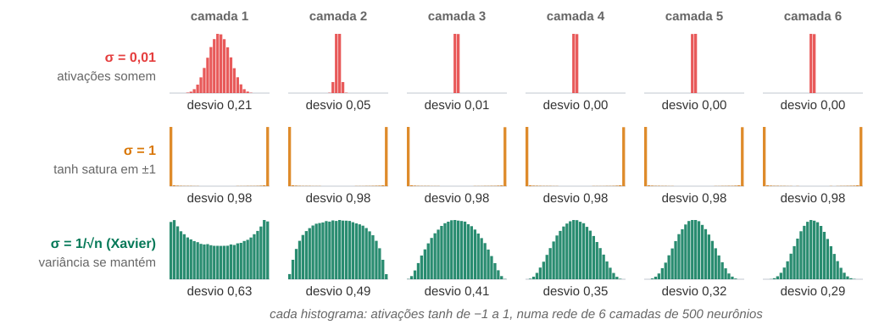
Pesos pequenos demais apagam o sinal camada a camada; grandes demais saturam a tanh, onde a derivada é zero. A escala certa depende do número $n$ de entradas: $\sigma = 1/\sqrt{n}$ para tanh (Xavier) e $\sigma = \sqrt{2/n}$ para ReLU (He).
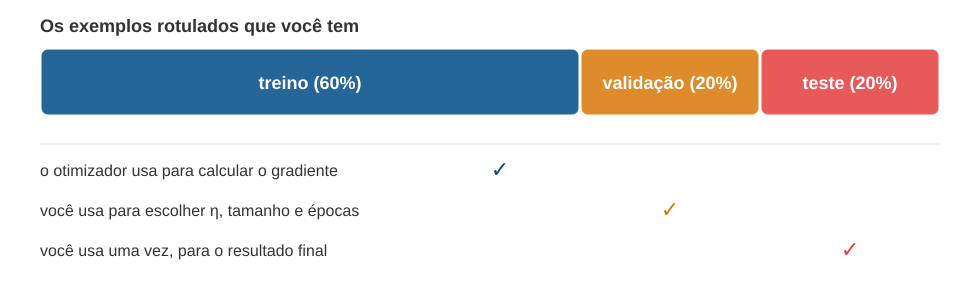
Perda baixa no treino não prova nada: a rede pode ter decorado. O que importa é o erro em dados novos. Se você escolhe $\eta$ olhando o teste, o teste vira validação e a nota final fica otimista.
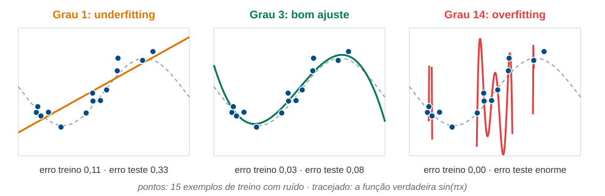
Grau 1 erra até no treino (underfitting). Grau 14 zera o erro de treino passando por todos os pontos, inclusive pelo ruído, e erra muito em pontos novos (overfitting).
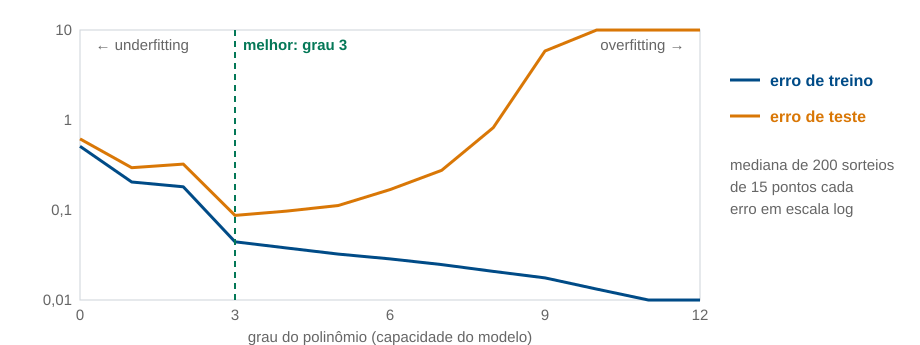
Mais capacidade sempre ajuda no treino; no teste, ajuda até certo ponto e depois atrapalha. À esquerda o erro vem do viés (modelo simples demais); à direita, da variância (o modelo muda muito com o sorteio dos dados). A capacidade se escolhe na validação.
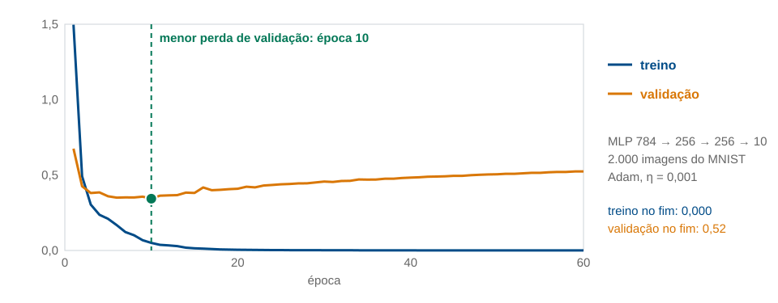
Depois da época 10, a rede segue melhorando no treino e piorando na validação: a perda de validação sobe de 0,34 para 0,52. A partir daí ela está decorando as 2.000 imagens.
A penalidade puxa todo peso para zero a cada passo; só cresce o peso que reduz a perda o bastante para compensar. Funções com pesos pequenos são mais suaves.
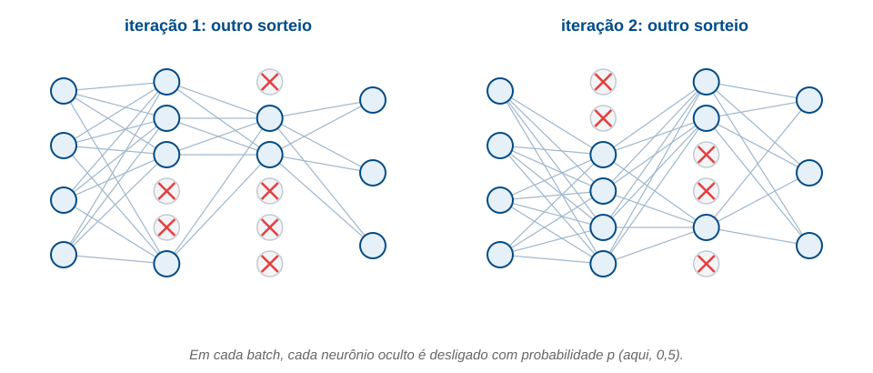
Nenhum neurônio pode contar com um vizinho específico, então cada um aprende algo útil sozinho. É como treinar muitas redes menores ao mesmo tempo e tirar a média.
nn.Sequential(nn.Linear(784, 256), nn.ReLU(), nn.Dropout(0.5), ...)
model.train() # dropout ligado
model.eval() # dropout desligado: usa a rede inteira
A regularização mais barata: avaliar a validação a cada época, guardar os pesos da melhor época e parar quando ela não melhora há algumas épocas (a "paciência"). Aqui, ficaríamos com a época 10.
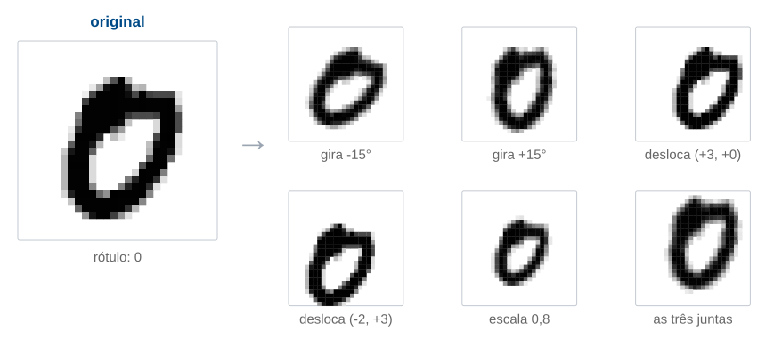
Se girar ou deslocar um pouco não muda o rótulo, cada imagem vira várias. A rede vê exemplos novos a cada época e aprende que essas mudanças não importam. É a regularização mais forte em visão (Bloco 2).
Cada neurônio é padronizado com a média e o desvio do batch; $\gamma$ e $\beta$ são aprendidos. A camada seguinte recebe sempre a mesma escala, o que permite $\eta$ maiores.
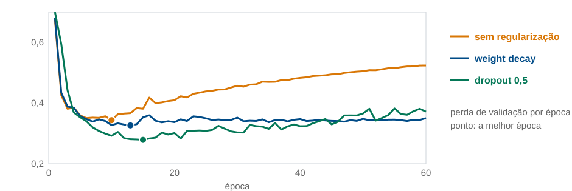
Mesma rede, mesmos dados
Melhor perda de validação
Perda de validação na época 60
Acurácia de validação na época 60
Sem regularização
0,344 (época 10)
0,524
91,5%
Weight decay (AdamW, 0,5)
0,326 (época 13)
0,350
91,4%
Dropout (p = 0,5)
0,279 (época 15)
0,372
92,4%
até 50 XP
Regras 15 min
Em grupos. Para cada paciente: um diagnóstico e uma prescrição. 5 pontos por item certo. As curvas são de redes treinadas de verdade no MNIST.
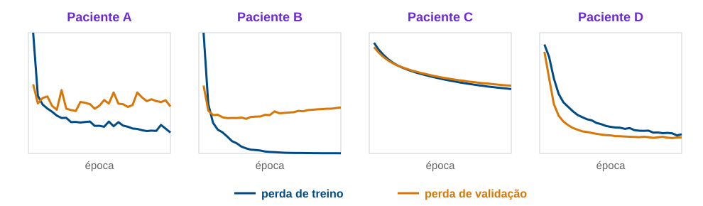
A: η alto demais, curvas ruidosas. Reduzir η.
B: overfitting. Regularizar ou parar cedo.
C: underfitting. Rede maior ou treinar mais.
D: validação abaixo do treino. Dropout forte (ou vazamento).
Para levar
Comece com AdamW, $\eta \approx 10^{-3}$ e um schedule
Separe treino, validação e teste; escolha tudo na validação
Primeiro consiga overfitting, depois regularize
🟢 Próxima aula: Lab 1
MLP em PyTorch no Fashion-MNIST: o loop de treino completo e experimentos com tudo o que vimos no bloco. Venha com o Colab funcionando.
70 XP
📖 Study — O paper do Dropout
Leia as seções 1 e 2 de Dropout: A Simple Way to Prevent Neural Networks from Overfitting (Srivastava et al., JMLR 2014) e responda, com suas palavras:
Por que treinar com dropout se parece com treinar um ensemble de redes? Quantas sub-redes existem para $n$ neurônios?
O que muda entre treino e inferência, e por que essa mudança é necessária?
Descreva uma situação em que você não usaria dropout e justifique.